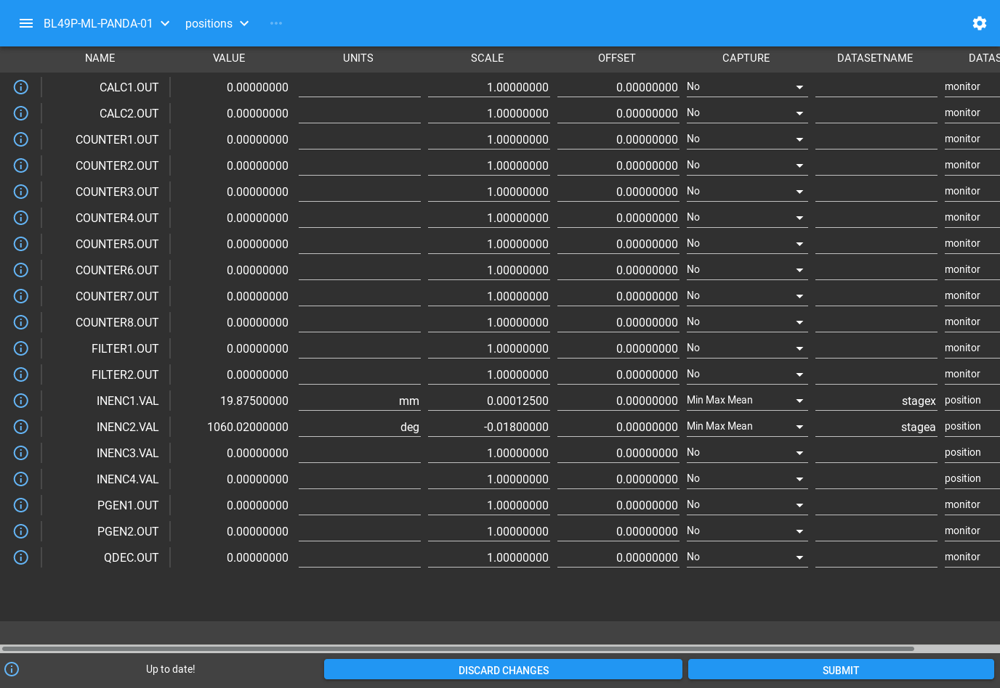
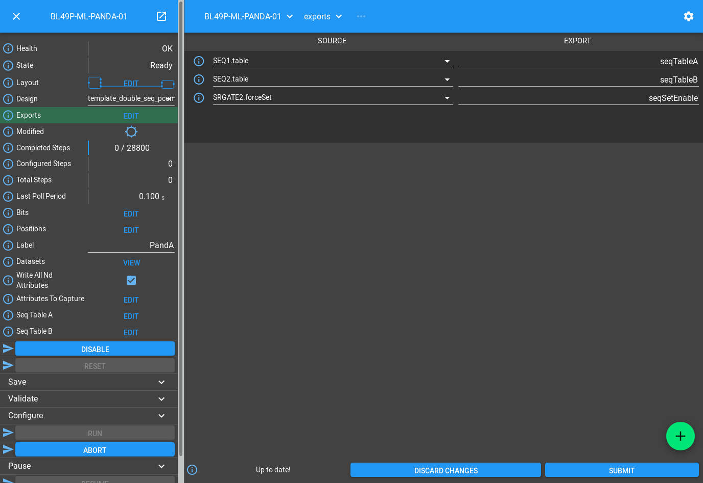
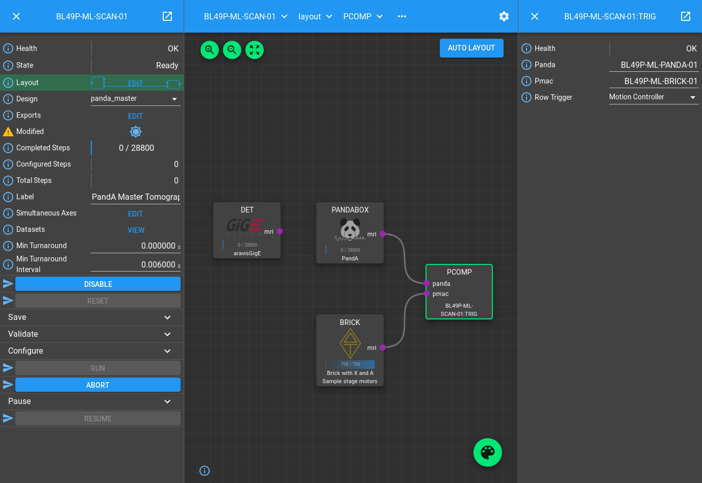

PandA Master Tutorial
You should already know how to create a Block in the Scan Layer that can control a Delta Tau PMAC, sending triggers to a PandABox which forwards them to detectors and captures encoder positions. We now move onto using the PandA in a more intelligent way, either listening to the encoder positions or a single gating signal for each sequence of points, and generating the trigger stream itself.
Strategy
Note
A more in-depth overview of this topic can be found in Trajectory Scan Triggering, with a description of PandA-based triggering at the bottom.
Imagine a 2D Grid scan, with a number of rows. PandA should wait until the start of the row, then make the right number of time based trigger signals, then wait for the turnaround to happen before waiting for the next row. This waiting can be either based on the encoder position (Position Compare), or for a gating signal from the motion controller that goes high for the duration of the row.
This strategy can be extended to any sort of scan trajectory. It is implemented by Malcolm generating a table of sequencer rows, with 3 sequencer rows per scan section without gaps. These rows are described below for each case:
Position Compare
Compare on the lower bound of the motor that moves by the biggest number of counts during the first point of the row, producing one live trigger pulse
Produce the rest of the live triggers for the row
Produce a dead trigger for the start of the turnaround, waiting for the amount of time that the motor is going in the wrong direction during the turnaround
Motion Gate
Wait for gating signal to go high, then produce one live trigger pulse
Produce the rest of the live triggers for the row
Wait for the gating signal to go low, then produce a dead trigger pulse
Adding to the scan Block
In the PMAC Master Tutorial you should have created a scan_block.yaml in the
etc/malcolm/blocks subdirectory. We will now add a new
panda_seq_trigger_block and its corresponding PandASeqTriggerPart to it. It
will hold the mri of the PandA and Brick that are performing the scan, and
will set the PandA sequencer tables to the correct values:
...
- scanning.parts.DetectorChildPart:
name: PANDA-01
mri: BLxxI-ML-PANDA-01
initial_visibility: True
- ADPandABlocks.blocks.panda_seq_trigger_block:
mri: $(mri_prefix):TRIG
panda: BLxxI-ML-PANDA-01
pmac: BLxxI-ML-BRICK-01
# Make this initially invisible so it doesn't disturb existing scans
- ADPandABlocks.parts.PandASeqTriggerPart:
name: TRIG
mri: $(mri_prefix):TRIG
initial_visibility: False
The DetectorChildPart definition for the PandA is unchanged, the TRIG Block
purely holds the data of which panda and which pmac to use, so all of the logic
is contained in the TRIG Part.
Note
The PandAPcompPart has initial_visibility set to False, which means that the block is not part of the layout by default. We do this because we are adding this Part to an existing scan Block definition, which already has instances and possibly saved configs. Loading a saved config will only affect Parts and Blocks contained within it, so any existing saved config will not touch this new TRIG Part. If it was visible, it would contribute to the existing scans too, which would make them error as the PandA wouldn’t have been setup for it.
Setup the Devices
We can now run up imalcolm by executing etc/malcolm/BLxxI-ML-MALC-01.yaml,
and open http://localhost:8008/gui/BLxxI-ML-SCAN-01 to see our scan Block.
First, just check that the config we saved in the previous tutorial still works.
It should run with no modifications. If this is all fine, then the motion
controller will require no changes:
We can then navigate back up and to the PandA, and load the Template Design
template_double_seq_pcomp:
This design sets up a pair of SEQ blocks that Malcolm will write to to produce
the live and dead signals based on encoder inputs or motion gating signal. You
should wire any input encoders to posa, posb, posc of both SEQ
Blocks, and the motion gating signal to bita of both SEQ Blocks if you
are using that mode.
The Blocks after the SEQ blocks are very similar to the PMAC live and dead frame processing (minus the PULSE block as PandA will drop its pulse outputs on disable). The live and dead signals are turned into a detector trigger, PCAP trigger and gate.
The Blocks before the SEQ blocks make sure that the SEQ Blocks act as a double buffered design, when one ends it flips to the other, until no more frames are to be output. There is a delay on the inputs of LUT3 to make sure that SEQ1 is always the first to fire. There is also an SRGATE that acts as a trigger to start when the motors are in position.
So that Malcolm knows which scannable is connected to which input of the SEQ Blocks, the Positions table needs to be setup:
The positions the sequencer inputs are connected to need to be setup with the correct scale and offset (normally inherited from the EPICS motor records with ADPandABlocksMotorSync.template), and a dataset name that matches the scannable name.
We also need to tell Malcolm what sequencers to use and how to enable when the motors are in position. We do this with the Exports table:
The names on the right are listed in the documentation for the
PandASeqTriggerPart as the interface it expects to be exported by the PandA.
This allows for mixing of functionality in a single design, with multiple parts
possibly working on different parts of the same PandA. The names on the left are
the child fields that should be exported.
In this case we are exporting everything that needs to change, namely the two
SEQ tables, and the SRGATE forceSet() Method.
Now we have changed the inputs and outputs to this chain of Blocks, we can save the design with a new name.
Setup the Scan
We can now setup the scan Block in the same way as the PMAC Master Tutorial by:
Setting the scan
LabelSetting
Simultaneous AxesSaving the design with a name that is similar to the label
We can also switch the row triggering mode between Postion Compare (the default) and Motion Controller gating signal:
This will make a saved config that captures the device design names:
{
"attributes": {
"layout": {
"BRICK-01": {
"x": 0.0,
"y": 139.60000610351562,
"visible": true
},
"PANDA-01": {
"x": -3.3333333333333712,
"y": -1.1111111111110858,
"visible": true
},
"TRIG": {
"x": 378.5,
"y": -2.5,
"visible": true
}
},
"exports": {},
"simultaneousAxes": [
"stagea",
"stagex"
],
"minTurnaround": 0.0,
"minTurnaroundInterval": 0.006,
"label": "PandA Master Tomography"
},
"children": {
"BRICK": {
"design": "a_z_in_cs1"
},
"PANDABOX": {
"design": "panda_master"
},
"TRIG": {
"panda": "BL49P-ML-PANDA-01",
"pmac": "BL49P-ML-BRICK-01",
"rowTrigger": "Motion Controller"
}
}
Note
We have made a new design for SCAN-01. This means we can switch between trigger schemes on the same scan Block without having to change anything in GDA. If you need both trigger schemes to be available in GDA, then leave the first scan as it was, and make a second scan Block, setting it up according to the instructions above
If we now want this to always be the default setup for this Scan, then we
can set the initial_design for this scan instance in
etc/malcolm/BLxxI-ML-MALC-01.yaml:
...
# Define the Scans
- BLxxI.blocks.scan_block:
mri_prefix: BLxxI-ML-SCAN-01
config_dir: $(config_dir)
initial_design: panda_master_tomo
# More scans here...
...
Conclusion
This tutorial has given us an understanding of how to perform a scan with the PandA acting as master, doing position compare on encoders or listing for a row gating signal and sending time based triggers to a detector. The next tutorial will show how PandA can trigger multiple detectors at different rates.